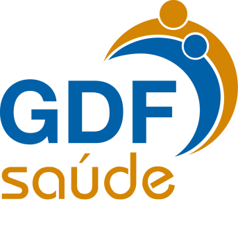
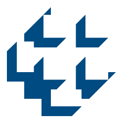
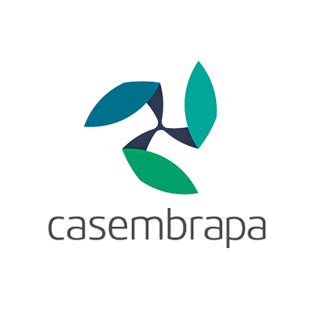
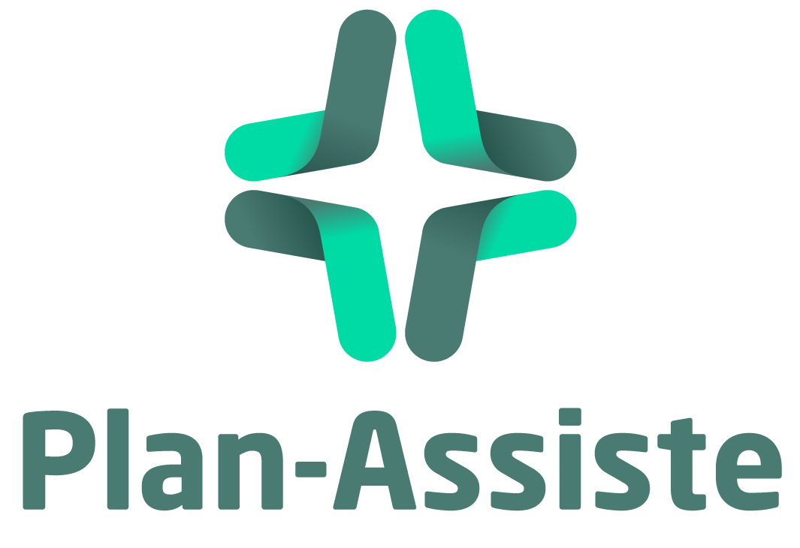
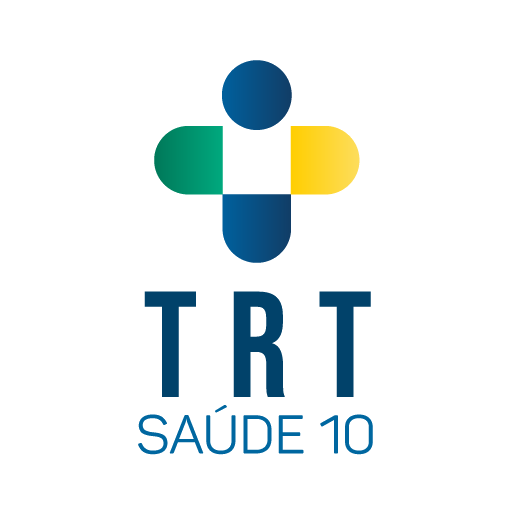
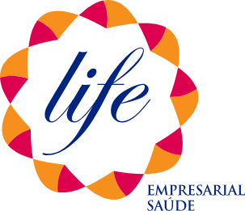

VISIONMED
Centro Oftalmológico
Somos especialistas em cuidado e saúde da visão com tecnologia moderna.
Agendar ConsultaSobre a Clínica
A VisionMed é uma clínica especializada em oftalmologia dedicada ao cuidado completo da saúde ocular. Com mais de 20 anos de experiência, unimos atendimento humanizado, tecnologia moderna e diagnóstico preciso para oferecer mais segurança e tranquilidade aos nossos pacientes.
Nosso compromisso é proporcionar um atendimento acolhedor, com atenção em cada detalhe, explicações claras e acompanhamento individual. Mais do que realizar exames, buscamos orientar e cuidar de cada paciente de forma próxima e responsável.
Contamos com uma estrutura preparada para a realização de diversos exames oftalmológicos, contribuindo para prevenção, diagnóstico e acompanhamento da saúde visual com qualidade e confiança.
Atendimento Humanizado
Cuidado próximo, acolhedor e com atenção individual em cada consulta.
Tecnologia Moderna
Equipamentos atualizados para exames oftalmológicos com mais precisão.
Experiência e Confiança
Mais de 20 anos dedicados à saúde ocular e ao bem-estar dos pacientes.
Exames Realizados
Conheça alguns dos principais exames realizados na clínica para avaliação, prevenção e acompanhamento da saúde ocular.
Convênios e Atendimento
Atendemos convênios selecionados e pacientes particulares. Confira alguns dos principais convênios aceitos pela clínica e, caso o seu não esteja listado, consulte nossa equipe.
Saúde Caixa
Consulte cobertura e condições no momento do agendamento.

GDF Saúde
Verifique a elegibilidade e os detalhes do atendimento.

Bacen
Entre em contato para confirmar cobertura e autorização.

Casembrapa
Consulte disponibilidade e orientações de atendimento.
Pró-Saúde TJDFT
Confirme com antecedência cobertura e elegibilidade.
Fascal
Consulte cobertura e condições para o seu atendimento.

Plan-Assiste MPU
Verifique com nossa equipe os detalhes da cobertura.

TRT Saúde
Consulte disponibilidade e condições de atendimento.

Life Empresarial
Consulte disponibilidade e condições de atendimento.
Todos os convênios atendidos
- Bacen
- Casembrapa
- Fascal
- GDF Saúde
- Life Empresarial
- Plan-Assiste MPU
- Plas/JMU (STM)
- Pró-Saúde (Câmara dos Deputados)
- Pró-Saúde TJDFT
- Pró-Social (TRF)
- Real Grandeza
- Saúde Caixa
- Saúde Petrobras
- Serpro
- SIS Senado
- TRE Saúde
- TRT Saúde
- TST Saúde
Não encontrou seu convênio?
Nossa equipe pode verificar a cobertura, orientar sobre elegibilidade e informar as melhores formas de atendimento para você.
Consultar pelo WhatsAppLocalização
Estamos em uma localização de fácil acesso para oferecer mais praticidade no seu atendimento.
VisionMed - Centro Oftalmológico
CSB 02, Lote 1/4, Alameda Shopping, Torre A, Salas 301 e 303
CEP: 72015-525
Taguatinga - DF
Contatos
Nossa equipe está pronta para orientar você sobre consultas, exames, convênios e horários de atendimento com praticidade e atenção.